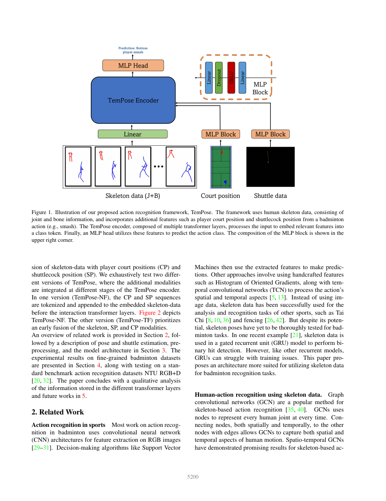
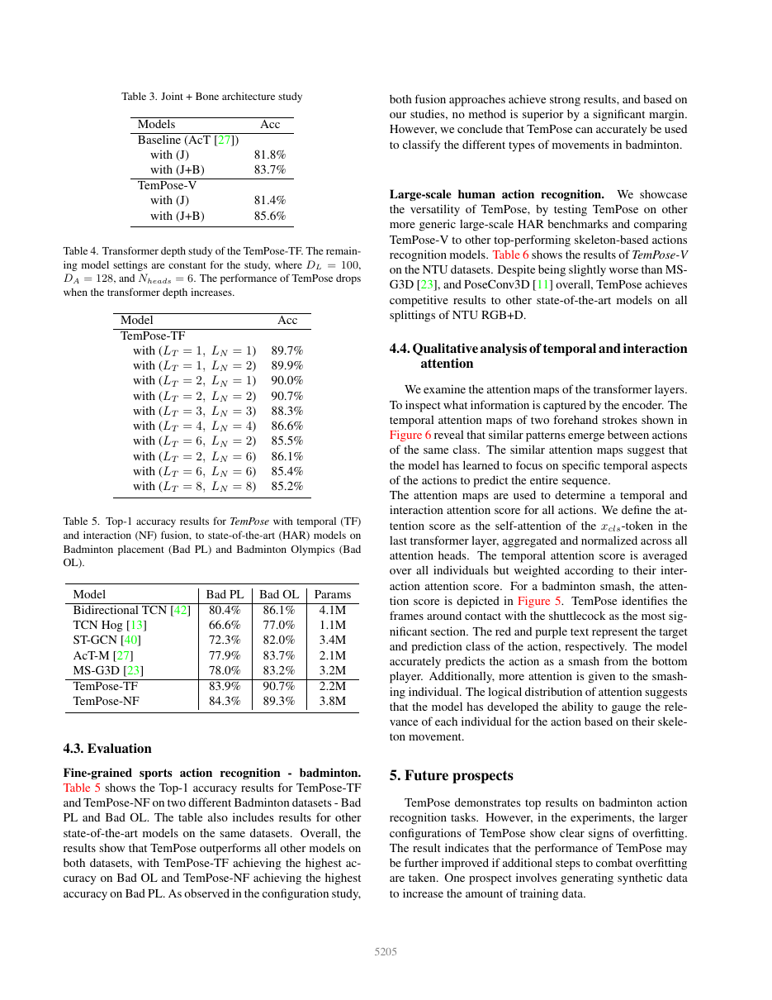
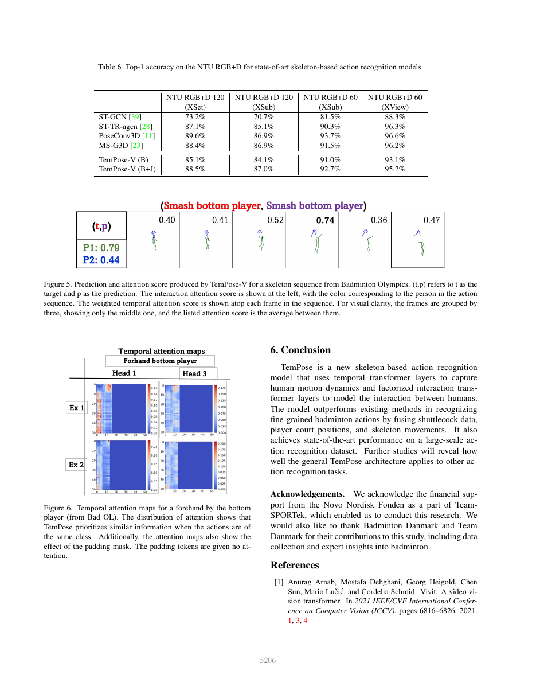

一句话结论
TemPose 是 BST related work 里最直接的 badminton fine-grained motion 锚点：它用骨架 Transformer 建模多人、可变长度的羽毛球动作序列，并把 shuttlecock position 与 player court position 作为额外输入流，证明羽毛球击球语义可以从球路 tracking 过渡到姿态驱动的细粒度动作识别。
论文定位
这篇论文填补 sources/2026-05-16-bst-badminton-stroke-type-transformer 前面的关键方法层：BST 更像后续 stroke-type classifier，TemPose 则更清楚地说明“骨架序列 + 时间注意力 + 人际交互层”如何在羽毛球场景中工作。它和 sources/2026-04-25-st-gcn 构成从 ST-GCN 到 Transformer 的方法演化，也和 sources/2026-05-16-protogcn-skeleton-action-recognition 一起支撑 skeleton-based action recognition 在体育动作中的细粒度化趋势。
问题定义
羽毛球 stroke 的动作差异很细：很多类别在 RGB 外观和身体姿态上高度相似，背景、场馆、衣服和转播机位会引入噪声。TemPose 的任务是用 skeleton-centered representation 识别 fine-grained badminton actions，同时吸收 shuttle 和 court position 这类体育专属上下文。
方法概述
- 输入：joint / bone skeleton sequence，可加入 player court position (CP) 和 shuttlecock position (SP)。
- 结构：temporal transformer layers 处理时间动态，factorized interaction transformer layers 建模多人交互。
- 融合方式：TemPose-TF 在 temporal layers 中融合 CP / SP；TemPose-NF 在 interaction layers 前追加额外模态 token。
- 输出：class token 进入 MLP head，预测动作类别。
- 解释入口：temporal attention map 可展示模型关注哪些关键帧。
关键图示

p2 展示 TemPose framework：skeleton、joint / bone、court position 和 shuttlecock position 被统一送入 Transformer encoder。

p7 是 badminton fine-grained datasets 的主结果页。TemPose-TF 在 Bad OL 上达到 90.7%，TemPose-NF 在 Bad PL 上达到 84.3%，均高于 ST-GCN、TCN 和 MS-G3D 等基线。

p8 展示 NTU RGB+D 泛化结果和 attention visualization。attention map 对动作纠正 demo 的证据窗口设计很有价值。
核心实验与结果
| 实验 | 结果 | 含义 |
|---|---|---|
| Model configuration | TemPose-TF (DL=100, DA=128) 在 Bad OL 上 90.7%，约 1.7M 参数 | temporal fusion 是该设置下的强平衡点 |
| Joint + Bone | TemPose-V 从 J-only 81.4% 提升到 J+B 85.6% | bone 信息对细粒度运动识别有帮助 |
| Bad PL / Bad OL | TemPose-TF：83.9% / 90.7%；TemPose-NF：84.3% / 89.3% | SP / CP 融合比通用 SAR 基线更适合羽毛球 |
| NTU RGB+D | TemPose-V (B+J) 在 NTU120 XSet 88.5%、XSub 87.0% | 结构具有通用 skeleton action recognition 能力 |
| Attention map | smash 等动作中关注接触 shuttlecock 附近帧 | 可作为教练式解释的证据窗口 |
对当前 wiki 判断的影响
TemPose 把 badminton 子线从“球在哪里”推进到“人做了什么动作”。它让 topics/sports-ai-video-understanding 的层级更清楚：TrackNet / MonoTrack 负责 shuttle trajectory，ShuttleSet 提供 stroke-level records，TemPose / BST 负责 stroke semantics，后续动作纠正 demo 可以在这一层上定义错误模式。
对于 questions/question-badminton-stroke-correction-demo，TemPose 的 attention map 提醒我们：输出错误模式时应同时给出 hit frame 周围的关键帧、关键关节、置信度和动作证据。
局限或疑问
- 结果依赖 pose、court position 和 shuttle position 的质量；转播遮挡和运动模糊会影响分类。
- Bad PL 数据集为 confidential，公开复现更依赖 Bad OL 或后续可公开数据。
- Attention map 是解释入口，真正教练反馈还需要错误模式标签、动作阶段和反馈模板。
原始材料
raw/ingest/2026-05-16-tempose-badminton-fine-grained-motion/paper.pdfraw/ingest/2026-05-16-tempose-badminton-fine-grained-motion/paper-text.mdraw/ingest/2026-05-16-tempose-badminton-fine-grained-motion/analysis.mdraw/ingest/2026-05-16-tempose-badminton-fine-grained-motion/page-previews-contact-sheet.pngraw/ingest/2026-05-16-tempose-badminton-fine-grained-motion/abstract.mdraw/ingest/2026-05-16-tempose-badminton-fine-grained-motion/links.yaml
相关页面
- sources/2026-05-16-bst-badminton-stroke-type-transformer
- sources/2026-05-16-shuttleset-stroke-level-badminton-dataset
- sources/2026-05-16-protogcn-skeleton-action-recognition
- sources/2026-04-25-st-gcn
- topics/sports-ai-video-understanding
- topics/sports-ai-roadmap
- questions/question-badminton-stroke-correction-demo